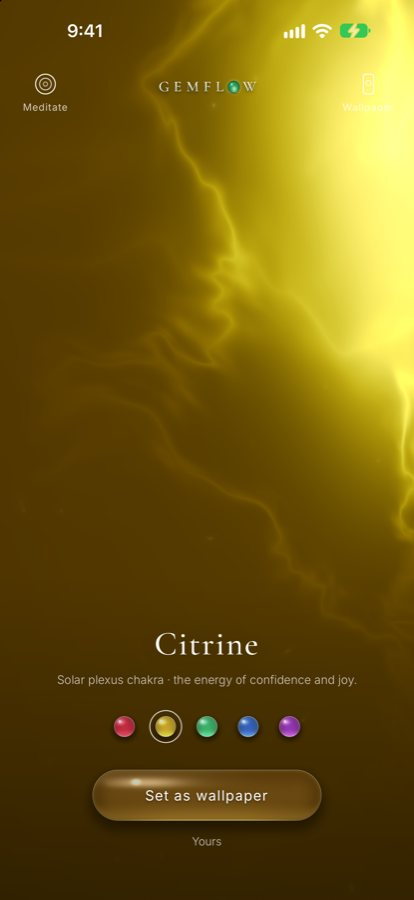

November birthstone · citrine
Born in November: a golden light for the darkening days
When the evenings come early and the year begins to turn inward, it can feel as if the light is leaving you too. But if you were born in November, your stone is not a dark one. It is a small, warm sun: golden citrine and its older sister, topaz. November was given gold, as if someone knew this is the month when we most need to remember our own light.

Citrine, the golden November stone, as a living light in the Gemflow app.
When the light grows short
Do you feel November inside you?
There is a particular quiet that arrives in November. The trees let go of the last leaves, the air turns sharp, and many of us feel a pull to slow down, to look back over the year, to ask what we are carrying and what we are ready to release. Sometimes that quiet feels like loneliness, or like a light inside you has dimmed. You may long for something to hold on to, a sign that your own warmth is still there under the grey sky. This is where your birthstone begins its story: a golden stone for the darkest stretch of the year.
Two stones, one month
How November came to have two birthstones
“Who first comes to this world below / With drear November’s fog and snow / Should prize the topaz’s amber hue— / Emblem of friends and lovers true.”
Old birthday verses like this one, printed by the gem scholar George Frederick Kunz in 1913, gave November a single golden stone. The November birthstones today are topaz and citrine: topaz has been on the American list since jewelers adopted it in Kansas City in August 1912, and citrine joined it in the middle of the 20th century, a change usually dated to 1952. So the month that grows darkest was given not one sun, but two. Topaz is the elder, the stone of the old poems, and citrine is the younger sister who came to stand beside her.
Sisters in gold
Why topaz and citrine are so often confused
For centuries, almost any golden stone was simply called topaz. Merchants sold warm yellow quartz as “Madeira topaz” or “gold topaz”, and many a family heirloom labelled topaz is really citrine. Beneath the shared color they are different beings. Topaz is a harder, denser crystal, a little cooler to the eye; citrine is a quartz, the same family as amethyst and clear rock crystal, and its name comes from the French citron, lemon. Perhaps it is fitting that they were mistaken for each other for so long. They carry the same idea, the warmth of late sun on autumn leaves, held in stone.
Citrine
What citrine means
Citrine is traditionally seen as a stone of sunlight: warmth, optimism, confidence and the quiet joy of being yourself. In modern crystal lore it is sometimes called the merchant’s stone and linked with abundance, not only of money, but of ideas, friendship and courage. Many people keep a piece of citrine where the morning light can find it, or carry one through a season that feels heavy, as a reminder that brightness can be chosen, a little at a time. If topaz is the stone of loyal friendship in the old verses, citrine is the friend who reminds you of your own shine.
Your inner sun
Citrine and the solar plexus chakra
In yoga traditions the solar plexus chakra, Manipura (Maṇipūra), sits just above the navel. Its name holds the Sanskrit word maṇi, jewel, and an old commentary says it is named so because, full of inner fire, it is “lustrous as a gem”. Modern guides paint it yellow and give it to citrine. It is linked with your will, your self-worth and the courage to live as yourself. In November, when the outer sun is low, citrine is a way of turning towards the sun within. More about this chakra: the solar plexus chakra stone.
A November ritual
A candle, a golden stone and one wish
- On your birthday, or any evening in November, light a single candle in a dim room.
- Hold a yellow stone, citrine or topaz, in both hands. If you have none, let citrine’s light glow in Gemflow on your phone.
- Rest your hands just above your navel. Breathe slowly and imagine a small golden sun there, growing a little brighter with every breath.
- Think of one thing the past year taught you. Thank it, and let it go with your out-breath.
- Say one wish for the year ahead, quietly and simply, in your own words. For example: I let my light be seen.
- Sit with the candle for a few more breaths, then blow it out and keep the stone where you will see it tomorrow morning.
If you are giving citrine to someone born in November, you might write a single line with it: what you see shining in them. A golden stone with a sentence like that becomes more than a birthstone. It becomes a mirror.
Your daily companion
Citrine and 528 Hz in Gemflow
In Gemflow, citrine is a golden light that glows from deep inside the stone, warm at the center and amber at the edges, alive on your screen and never the same twice. It follows your touch. Open Meditate and it rises and settles with your breath while a soft 528 Hz tone hums beneath guqin and singing bowls. A minute a day through the darkest month, to come back to your own warmth. More about the stone: citrine; more about its tone: 528 Hz, the love frequency.
Walk the other stones
Each of the five Gemflow stones belongs to one chakra and one tone: see the chakra stones and frequencies chart. Citrine’s chakra has its own story: the solar plexus chakra, the fire that remembers who you are. Below it lies the root chakra and ruby; above it, the heart chakra.
The November birthstone at a glance
| Birthstones | Topaz and citrine |
|---|---|
| On the list since | Topaz: 1912 (American jewelers, Kansas City). Citrine: added mid-20th century, usually dated to 1952 |
| Colors | Topaz: golden yellow, also blue, pink, colorless. Citrine: pale lemon to deep amber |
| Mineral | Topaz: aluminum silicate with fluorine, hardness 8. Citrine: quartz, hardness 7 |
| Name | Citrine: from French citron, lemon |
| Chakra (modern) | Solar plexus, Manipura (Maṇipūra), yellow |
| Gemflow stone and tone | Citrine, 528 Hz |
Questions
What is the November birthstone?
The November birthstones are topaz and citrine. Topaz is the traditional November stone; citrine is the modern addition. Both are golden yellow, which is why they are often paired.
Why does November have two birthstones?
November has two birthstones because American jewelers added citrine to the 1912 list, which named only topaz. Citrine is a more affordable golden stone that looks much like yellow topaz.
When was citrine added as a November birthstone?
Citrine was added as a November birthstone in the mid-20th century, most often dated to 1952, when the Jewelry Industry Council of America updated the 1912 list. Some sources give a different year.
What does citrine mean?
Citrine traditionally symbolizes sunlight, warmth, optimism and confidence; modern crystal lore also links it with abundance. Its name comes from the French citron, lemon.
Is citrine the same as yellow topaz?
Citrine is not the same as yellow topaz. Citrine is a quartz (hardness 7); topaz is a different mineral (hardness 8). They look alike, and citrine was long sold as “topaz”.
What chakra is citrine linked with?
Citrine is linked with the solar plexus chakra, Manipura (Maṇipūra), above the navel. Modern guides pair them by their shared yellow color; older Sanskrit texts do not name a stone.
What frequency goes with citrine?
Citrine is usually paired with 528 Hz, a Solfeggio frequency linked to the solar plexus in modern meditation practice. In the Gemflow app, citrine carries 528 Hz.
Can citrine heal me?
Citrine is not a medical treatment. People use it as a companion for meditation, ritual and gifts, and as a reminder of an intention.
Notes and sources
- George Frederick Kunz, The Curious Lore of Precious Stones (Lippincott, 1913): the list adopted by the National Association of Jewellers “at the meeting in Kansas City August, 1912”, with November: Topaz; and the November verse “Who first comes to this world below…”.
- Citrine’s addition is usually dated to 1952 and credited to the Jewelry Industry Council of America (Bruce G. Knuth, Gems in Myth, Legend and Lore, revised ed., Jewelers Press, 2007, p. 311, as cited by Wikipedia, “Birthstone”). Some sources give another year or body. Jewelers of America, the successor of the 1912 association, lists citrine and topaz for November today.
- International Gem Society, “Why are Topaz and Citrine Gemstones Misidentified?”, on trade names such as “Madeira topaz”. Gemological Institute of America, “Citrine History and Lore”: most citrine on the market today is heat-treated amethyst.
- Arthur Avalon (Sir John Woodroffe), The Serpent Power (1919), introduction: the Manipura lotus is so called, “according to the Gautamiya Tantra, because, owing to the presence of the fiery Tejas, it is lustrous as a gem (Mani)”.
- Pairing citrine with the solar plexus chakra and 528 Hz is a modern meditation practice. Gemflow is for relaxation, meditation and ritual; it is not a medical product.
© 2026 Gemflow · Home · Citrine · 528 Hz · Solar plexus chakra stone · Chakra stones chart · Chakra colors · Root chakra stone · Heart chakra stone · Ruby · Emerald · Sapphire · Amethyst · YouTube · Privacy